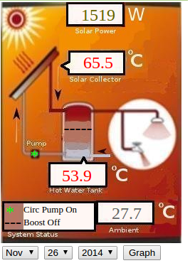
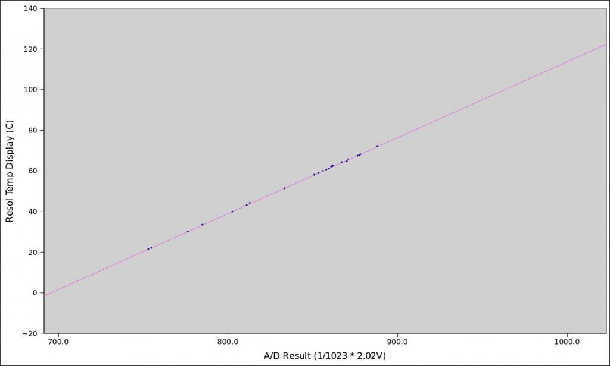

Hi,
I am in the process of replacing my factory solar h2o controller with a custom version using an Arduino. Mostly just cos it is fun, but also because I want to measure the hot water cylinder temps and monitor when the pump is firing etc. Using EmonCMS + MQTT of course ;).
So I have got pretty much everything working, including replicating most of the functionality in my existing controller. But I wanted to run it by the experts on here and check if I have missed anything, since we are dealing with potentially very hot water and if this things goes wrong it cause serious issues/damage!
Here is the current code for my updatePump() routine which fires after I read the various temp sensors. Hopefully the variable names are obvious enough (e.g. temp_hwc_b/m/t => temp at HWC bottom/middle/top).
Any questions fire away, would appreciate any and all feedback!
void updatePump() {
// ignore calculations if the temp sensors haven't been read yet
if (temp_hwc_b == 0 || temp_col == 0) {
Serial.println("Ignoring pump calculations until we have temps");
return;
}
// first we check if we are within the boundaries of any of our
// protection/safety modes to prevent any damage to the system
// emergency overheating
if (temp_col > temp_col_emerg_off )
emerg_shutdown = 1;
if (temp_col < temp_col_emerg_on)
emerg_shutdown = 0;
// collector cooling mode
if (temp_col > temp_col_max)
col_cooling = 1;
if (temp_col < (temp_col_max - 2))
col_cooling = 0;
// collector warming mode
if (temp_col < temp_col_min)
col_warming = 1;
if (temp_col > (temp_col_min + 2))
col_warming = 0;
// start with the current state
int pump = pump_current;
// calculate the difference between the collector and HWC bottom
double diff = temp_col - temp_hwc_b;
// if collector is X degrees above the HWC bottom then pump on
if (diff > temp_diff_on)
pump = PUMP_ON;
// if collector is less than X degrees above HWC bottom then pump off
if (diff < temp_diff_off)
pump = PUMP_OFF;
// check to stop overheating of cylinder
if (temp_hwc_m > temp_hwc_max)
pump = PUMP_OFF;
// check if we are in the collector cooling or warming modes
// and override our differential calculations above
if (col_cooling || col_warming)
pump = PUMP_ON;
// emergency override so we don't overheat
if (emerg_shutdown || temp_hwc_m > 95.0 || temp_hwc_t > 95.0)
pump = PUMP_OFF;
// only update if the pump state has changed
if (pump != pump_current) {
Serial.print("Switching pump -> ");
Serial.println(pump == PUMP_ON ? "ON" : "OFF");
digitalWrite(PUMP_PIN, pump);
pump_current = pump;
}
}
Re: Solar H2O Controller Logic
I should have mentioned that my code is based on the example at http://openenergymonitor.org/emon/applications/shw#software. I have taken this and extended it to add some additional checks and 'modes'.
Re: Solar H2O Controller Logic
Do not rely on your code for safety. You must have hard-wired over-temperature protection in there somewhere as well. There is no way that you can guarantee that the output controlling the pump will fail to OFF. (There is no guarantee that a pair of thermostat contacts won't weld either, but I'd rather put my money on the thermostat than on a relay on the end of a microcontroller.)
So the first problem I see - if you haven't read the sensors or they fail to zero, the pump carries on doing whatever it was doing. 'emerg_shutdown' doesn't get a look-in as the function has returned. That's an obvious failure in the logic.
I'm also confused by the 'PUMP_OFF' and 'PUMP_ON' being repeated. Only the last true condition will set the pump state. Do you really want the later conditions to override the earlier ones? If you do, that's OK, but as you have it, collector heating/cooling will override the maximum set temperature 'PUMP_OFF'. I obviously don't know your system, nor what it can and can't do safely, but that looks wrong to me.
Re: Solar H2O Controller Logic
Thanks Robert - you have a valid point re. the hard-wired over-temp protection. The currently installed system doesn't have anything like this and I know of half a doz systems using the same controller - not saying it is ok, just that this controller has been approved by the regulators here in NZ and is in operation in a lot of places.
I do have a watchdog timer on my Arduino so it will restart if it ever locks up but I think moving the emergency shutoff logic above the temp validation is a very smart idea - I will definitely do that. At least then if my temp sensors fail then I will know the pump is off (well at least that the output pin is high!).
The idea with the PUMP_ON/OFF being repeated is that you have higher priority rules further down the list. So initially we just do the standard temp differential checks and make a decision as to whether to switch the pump on/off. Then after that is done we have a look at our special protection modes and they are allowed to override the basic logic. Finally the emergency checks can override everything.
I have a user manual here for the existing controller which explains some of this in more detail but basically the idea is you have a max HWC temp (in my case 85C). The controller will stop circulating heated water once the HWC reaches this. However, if the collector gets above 110C (temp_col_max) we start circulating water from the HWC to cool the collector down - this only runs until the collector cools down a couple of degrees. Similar logic for the lower temps - to prevent freezing. This can obviously increase the temp of the HWC above our configured max, which is why there is the hardcoded shutoff at 95C.
Here are the current values (which are the default values that come shipped on my existing controller) for reference;
Appreciate your feedback. Would be interested to hear you suggestions for a hard-wired thermostat shutoff - would this be a secondary temp probe in the cylinder which is wired in series with the live feed to the pump - if the thermostat is tripped it would shutoff the pump circuit altogether?
Cheers,
Ben
Re: Solar H2O Controller Logic
"a secondary temp probe in the cylinder which is wired in series with the live feed to the pump - if the thermostat is tripped it would shutoff the pump circuit altogether."
Indeed. A common-and-garden thermostat is more or less what I had in mind. It may well be that your installed and approved system has got a second protection mechanism in place that you don't know about, that has allowed its approval. Or maybe your regulators aren't quite as cynical as I am.
But you could have a problem with cooling the collector if the system has already tripped on the 'stat - I guess there's less danger to life and property in having a boiling collector than a boiling tank.
And I've no argument with the priority mechanism, I was simply questioning whether you indeed had what you intended.
Re: Solar H2O Controller Logic
I don't think there is any other protection system - the controller has a wire to the pump, and wires to the various temperature probes. So if those probes failed there is nothing else in the system to override the pump circuit - other than it auto-shutting down like we have discussed if the temp readings fail.
The 'stat would be on the HWC temp since that is the only thing we care about getting too hot, so the collector cooling should still be ok. If the HWC was so hot that it tripped the 'stat then I don't think we really want to be circulating that water to cool down the collector...
Thanks again for your feedback. Appreciate you taking the time to have a look over it all.
Re: Solar H2O Controller Logic
Hi,
I went through this a while back. The easiest way to do this is by getting a 12v DC Solar hot water pump on eBay, a 5-10 watt solar panel and an optional 50 deg C NO thermal switch and just wire it up. Switch on solar collector output pipe. Sun comes up, solar panel heats up, output get to 50 deg, closes switch, output from solar panel connected to pump and and away it goes. Water cools, pump off and cycle continues until hot water remains at 50 deg and above and pump continues to run until night time.
easy peasy
I also have a device that diverts hot water to prevent steaming called the Solar Steam Stopper.
Re: Solar H2O Controller Logic
Sumnerboy, my Resol controller follows pretty much exactly the same algorithm as yours, but with slightly different set-points (which are user-tweakable). I'm pretty sure mine lacks the "collector cooling mode" that you describe. Mine is an open loop system, which means it's actually the hotwater that gets sent up to the collector, and there's a pressure relief valve up there to let it boil/vent if it ever needs to. I'm guessing yours might be closed loop, and they're worried about loosing coolant if the collector gets too hot?
I was interested in monitoring it but not replacing it,so I piggy-back my monitor on top of their controller. I passively observe the temp sensor readings whenever their controller pulses them. I've got a dedicated CT on that GPO, so can easily detect when the circulation pump is running. It's about 22W (real) from memory but close to 70VA (apparent) so pretty easy to detect. And I have another CT on the 3600W electric boost element. All that lets me create the web display shown below. The pump icon turns green when it's running, dark otherwise, and the boost element turns red when it's energised. I even make an educated guess (based on some very rough measurements) at the flow rate, which lets me include a power readout.
Does yours use pt1000 temperature probes? How do you plan driving them? Mine doesn't energise them permanently, but rather pulses them every few seconds. I read somewhere that's to avoid self-heating effects.
Meanwhile, if this article is to be believed: http://reneweconomy.com.au/2014/solar-hot-water-solar-pv-study-says-pv-cheapest-way-go-34519 the crossover point has been reached (at least here in Aus). When total cost of ownership is considered, it's now cheaper to just add some more PV panels and heat your water with their output. The maths varies a lot depending on tariffs, for example it doesn't apply to me because of my generous feed-in tariff.

Re: Solar H2O Controller Logic
Very nice dBC! Are you using the VBus adapter to get your various readings from the controller? I just watched a short YouTube clip of someone setting up a Resol and the parameters and settings look remarkably similar to my controller (http://www.sokdoo.com/SR868C8.pdf). I wonder if they are based off the same firmware?
Unfortunately there is no way (that I know of) to piggy back off my controller however. More's the pity!
Mine uses a PT1000 probe in the collector and NTC10K probes for the HWC temp measurements. I am going to replace the NTC10K probes with DS18B20s as it is nice and easy to use these on an Arduino, but I can't change the probe in the collector very easily so I decided to leave it there and have bought a MAX31865 breakout board from PlayingWithFusion (http://playingwithfusion.com/productview.php?pdid=26) which handles reading the temperature values via the SPI bus.
Interesting point about self-heating - I will do some investigation into that.
My system is the same as yours, i.e. open loop. It will vent on the roof if required but the collector cooling is a function in the existing controller so I was keen to replicate.
The one thing the controller does is PWM the pump signal - which I am not going to attempt in my controller. I am a little concerned at this difference but time will tell if it makes any difference. My current controller was setup with a min pump % = 90% so I don't think I will be too different if I just run it at 100% (i.e. fully on) instead.
Very nice display you have setup there - pretty much exactly what I want to achieve, but in EmonCMS using MQTT. I can then integrate with openHAB and do things like stop HWC boosting if we are away on holiday, and warn if the HWC is a bit cool in the evenings for example.
Thanks for your feedback!
Re: Solar H2O Controller Logic
Are you using the VBus adapter to get your various readings from the controller?
It was quite a few years ago now, but I'm pretty sure I determined mine didn't have the VBus module. I guess when integrators (Conergy in my case) request these bits from the suppliers, there are a bunch of tick-boxes they can de-select to keep the costs down.
Unfortunately there is no way (that I know of) to piggy back off my controller however. More's the pity!
It may be a lot easier than you think. Provided you have access to the screw terminals for the temperature probes, just put a scope, or even a voltmeter on them. That's where I started, then worked out what it was doing from there. Every 2 seconds it energises one of the pt1000s with a brief pulse. I could see that pulse with a digital voltmeter so it's all very slow. My controller includes an LCD display displaying the two temperatures, so it was very easy to calibrate the voltage to their temperature display. Then I wired those two signals to two analog inputs and a few lines of code later, I had the readings in AtoD units... again easy to calibrate against their temperature display. I think I had to use an isolated (i.e. transformer based) DC supply to the Arduino to avoid earth loop issues, and I also used an external Vref (~ 2V) to give me better resolution.
I just poked around in the archives, and came across my calibration spreadsheet:
Re: Solar H2O Controller Logic
I might have to give that a go - thanks for the tip! If I can keep the existing controller I would be a lot happier I think - not that I don't think my version is much different - it is just nice to have standalone controllers for these mission critical systems.
Yet another thing to add to my project list...
Cheers,
Ben
Re: Solar H2O Controller Logic
dBC - would you care to share your Arduino sketch? To give me a starting point...Cheers!
Re: Solar H2O Controller Logic
Sure, but keep in mind it's not exactly in "shareable" state. It's quite bespoke to my system and it's a good 3 years old. Reading it again now, I'd probably do a few things differently... but it's been screwed to the wall under the house and working fine for 3 years, so I've not messed with it. To aid calibration with the Resol readout, I briefly attached a little I2C LCD display I had lying about, but that's not in the final version, which is why it's all been #ifdef'd away.
Oh, and TC and TS are Resol names for TempCollector and TempStorage. My rig only has 2 temp sensors: TC on the output of the collector, and TS at the bottom of the tank (65.5C and 53.9C in the display above). The raw A/D readings are sent over the virtualwire RF link, and the conversion/calibration is done externally.
This box/sketch only provides the two temperature readings. CT sensing of whether or not the circulation pump and boost element are running is done by my energy monitor.
You really need to start by looking at the signal on your temp sensor screw terminals to see how much of it is relevant to your setup. All those edge triggers, waste counts etc. were all hand crafted for my rig.
Re: Solar H2O Controller Logic
Sweet - appreciate it - I will have a play this weekend.
Re: Solar H2O Controller Logic
Thought I would follow up with this little project. I ended up canning the idea of replacing the Solar H2O controller, I got it working ok in my test bed, but when I deployed I was getting bad sensor readings quite regularly, and whenever the pump was activated I was seeing sensor errors - I am not sure what was wrong but after stuffing around and letting my collector temp get up to over 180 degrees (since the pump wasn't being run properly while I installed/tested) I decided to leave the existing factory-fitted controller in place.
I followed dBCs advice and went about designing an Arduino sketch to monitor the existing NTC 10K thermistors that are measuring the HWC temps (bottom/middle/top). After all, all I really wanted to do is track the HWC temps.
Turns out this wasn't as hard as I feared. I had never done analog reads using an external voltage reference so it was a great learning experience. Basically the NTC thermistors are wired up in a voltage divider within the solar controller. Then 5V is applied (actually about 4.91V) and a reading taken at the divider mid-point - all pretty standard stuff.
So my Arduino connects a wire from the top of one of the thermistors (VCC) and connects to AREF. I also connect a common GND between the Arduino and the solar controller. Then I just connect 3 of the analog pins to the other side of the three thermistors.
With the correct calculations and ADC conversions, I end up with a very accurate temperature reading - which is very close to what the solar controller is reporting on its LCD display.
Chuck in a bit of MQTT publishing and I now have all three of my cylinder probes reporting temps to both EmonCMS and openHAB. openHAB can now intelligently decide whether to enable my PV Router depending on the HWC temperature.
Very happy with the end result although it has taken me a while to get to this point! Thanks to all those who offered help and suggestions on here!
Re: Solar H2O Controller Logic
I finally got around to putting a scope on the two pt1000 screw terminals on my Resol controller, so figured I'd document it here for anyone else doing something similar. At the time I wrote that sketch above I only had a voltmeter and readings from the Arduino to go on.
Looks like it probes both temp sensors every 1.564 seconds, first TC (red trace) and then TS (yellow trace). It reads each one for 392 msecs (possibly doing a bit of oversampling there). It takes about 1 msec for the voltage to settle when it switches from TC to TS. At teh time of taking these pics, the two sensors were pretty close to the same temperature.
Re: Solar H2O Controller Logic
I have a user with an emon Pi installed and running and reporting his two solar panel outputs to our database. He also has a solar thermal installation with a Resol DeltaSol CS2 controller and we'd like to pick up the temperature and flow values from that system as well. Looks like some of you guys may have already done exactly that, so I'm hoping you might be able to offer some help.
I'm fairly good at building electronics but can't design stuff so I'm hoping some can post a circuit diagram. From Googling I see Resol company do actually make and sell both VBus/USB and VBus/Ethernet adaptors but if there's a simpler/more direct approach that will need just a little electronics, so we avoid having to get another Pi, that would be great.
Chris.
The greenDATA Project
http://projects.kmi.open.ac.uk/greendata/
Re: Solar H2O Controller Logic
I think there are a lot of different Resol controller models, so you probably can't assume they're all the same. I'd start by putting a voltmeter on the pt1000 screw terminals and see if you see the same voltages. If they are, there is no schematic really. I just ran those two signals to two ADC inputs on a 5V Arduino. To improve resolution, I built a simple ~2V Vref out of a 680/470 resistor divider as shown below. If you're going to be using a 3.3V system to monitor yours, you may not need to.
One bug in my current "design" is that if the power to the Arduino goes off, the Resol reports a sensor fault. Presumably the ADC inputs of an unpowered Arduino put quite a load on the sensors as they effectively try to power up the Arduino via the internal protection diodes. A series resistor on those ADC inputs might solve that, but I've not experimented with that (still well down my to-do list). As mentioned above, I think I had to use an isolated (i.e. transformer based) DC supply to the Arduino to avoid earth loop issues. It's all a bit of a hack, and may well void your Resol warranty, but mine has been monitoring happily for years.
[EDIT] hmmm... I could have sworn I was replying to a request for a schematic, but that request seems to have disappeared now. In any case, I'll leave this reply here in case it helps anyone else.
Re: Solar H2O Controller Logic
Regarding the voltage differences I did just find this on the Resol VBus group on Google Groups:
https://groups.google.com/forum/#!topic/resol-vbus/3CjZffK53ig
Sorry - I edited my post so I have to assume its being re-moderated.
Re: Solar H2O Controller Logic
dBC: Both Chris's posts of today were stuck in the moderation queue, so you shouldn't have seen them at all until 30 s ago.
Re: Solar H2O Controller Logic
Another option is the Resol VBus/LAN adaptor which costs around £100. This would save making any custom electronics but would need code added to the emon Pi to collect the data from it, cache it and send it. This is the UK authorised reseller:
http://www.seconsolar.com/
Re: Solar H2O Controller Logic
Actually, my Resol controller doesn't have the Vbus option. The solution described above just monitors the analog voltages from the pt1000 sensors as the Resol controller probes them every 2 seconds.
Re: Solar H2O Controller Logic
dBc/Chris
Here in Ireland the Resol Controllers are used and rebranded by a company called Joule as part of their Solar panel kits. I have a Deltasol BS/2 HS. It can be connected to a data logger and some software to monitor everything. The Resol controller uses a proprietary protocol but some smart people out in the internet have cracked this and have also designed the interface to the Raspberry Pi.
You may be interested in this link: https://www.domoticz.com/forum/viewtopic.php?t=8370
I was intending to have go at following these as a practical exercise to learn more about the raspberry pi and feed the output to emoncms but I am really very new at the raspberry pi thing so don't hold your breath!! If this could be "commoditised" I think there would be a lot of interest in it.
In the mean time, without knowing what your set up is, I have used the DS18b20 probes as replacements for the plug in thermometers in my solar pumping station to monitor the heat of the solar fluid going to/from my panels. You can take look at my results here: https://emoncms.org/dashboard/view?id=32140
Its not rocket science but it does save me getting up into the loft!! and its been of interest to my plumber who installed my system as a marketing tool to some of his other customers.
PS. The big slope recently was caused by me accidently turning off my wifi router when I went on holiday.
PPS The pump monitor I now know is not technically correct and I need to revisit how I do this.
Hope this helps
Re: Solar H2O Controller Logic
This topic is very timely as I have just had Viridan Solar Thermal in-roof panels fitted and providing heat to a thermal store. The pump centre is a Resol unit and I have just added a KM1 communication unit to access the data over VBus network. My intent is to monitor my system with a view to better heating optimisation